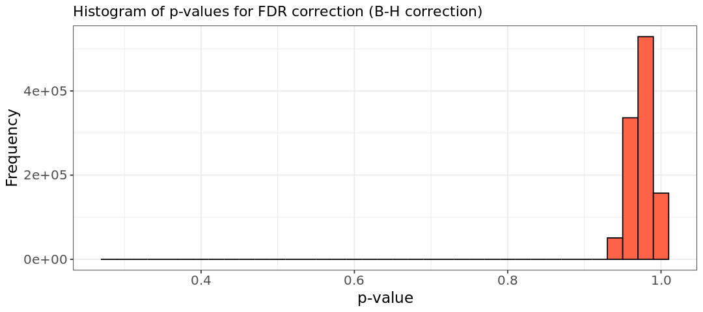
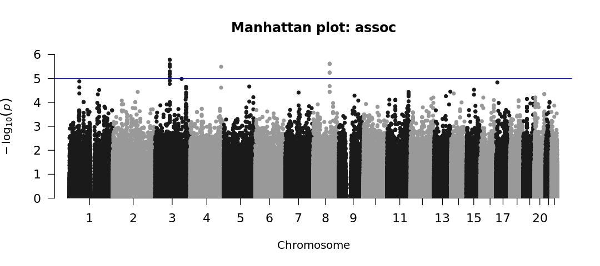

ln -sf ../Data
mkdir -p Results/GWAS5Association testing
Important notes for this notebook
After QC and generating MDS components as covariates to address population structure, the data is ready for association tests. In this tutorial, we provide scripts for association tests suitable for binary traits (e.g., alcohol-dependent patients vs. healthy controls) or quantitative traits (e.g., number of alcoholic beverages consumed per week).
Learning outcomes
- Discuss different types of association tests
- Identify the suitable association test for your data
How to make this notebook work
- In this notebook, we will use both
Randbash command lineprogramming languages. Remember to change the kernel whenever you transition from one language to the other (Kernel --> Change Kernel) indicated by the languages’ images. We will first runBashcommands.
 Choose the Bash kernel
Choose the Bash kernel
Some theory
Biometric model
The theory behind genetic association is rooted in the biometrical model, first established by Fisher. According to this model, each genetic variant has an additive effect on a trait’s value. For a specific variant and its genotypes, each genotype contributes differently to the trait. For example, in a two-allele system (A and a), the effects of the three genotypes (AA, Aa, a) are defined by two parameters: d (twice the difference between the homozygotes, AA and aa) and h (the effect of the heterozygote, Aa). The mean effect of the homozygotes is m. These parameters, d and h, are called genotypic effects (Neale and Cardon 2013).
Example
Imagine that we are talking about genes that influence adult stature. Let us assume that the normal range for males is from 1.47m to 2m: that is, about 0.56m. Let’s assume that each somatic chromosome has one gene of roughly equivalent effect. Then, in each locus, the homozygotes contribute ±d=±0.28 cm (from the midpoint, m), depending on whether they are AA, the increasing homozygote, or aa, the decreasing homozygote. While some loci may have larger effects, others are likely to have smaller contributions. This model suggests that the effect of any given gene is subtle and difficult to detect using classical genetic methods.
In GWAS, linear models have been typically used for continuous phenotypes (e.g. BMI, height, blood pressure) and logistic models for binary traits (e.g. disease presence). These models account for fixed effects (such as genotype) but also need to consider random effects, represented as an error term, \(e\), to minimize the influence of covariates, like sex of population structure.
Linear mixed models (LMMs) are increasingly popular as an alternative to standard linear models and have proven to be effective for analyzing complex traits. They adjust for confounding factors such as population stratification, family structure, and cryptic relatedness, resulting in more reliable test statistics. However, they are usually more computationally demanding.
6.1 Modelling
The linear regression model
The basic linear regression model is written as:
\[y = G\beta_G + X\beta_X + \epsilon\]
Here, \(y\) is the phenotype vector, \(G\) is the genotype/dosage matrix (the allele counts) for the current variant, \(X\) is the fixed-covariate matrix, and \(e\) is the error term subject to least-squares minimization.
PLINK supports SNP-trait association testing for both quantitative and binary traits:
-assoc: It performs chi-square tests for binary traits. For quantitative traits, it uses asymptotic methods (likelihood ratio test or Wald test) or empirical significance values. Covariates are not supported. It will automatically treat outcomes as quantitative when the phenotype column contains values other than 1, 2, 0, or missing.--linear: Fits linear regression models for quantitative traits, allowing covariates.--logistic: Fits or Firth logistic regression models for binary traits, supporting covariates and SNP-covariate interactions.
Both --linear and --logistic are more flexible than --assoc but may run slower. Further details are available in PLINK’s documentation. For detailed information on PLINK’s association methods, visit PLINK Association Analysis PLINK 1.9 or PLINK 2.0. Note that command options differ between versions.
PLINK in association testing
PLINK performs one degree of freedom (1 df) chi-square allelic test in which the trait value, or the log‐odds of a binary trait, increases or decreases linearly as a function of the number of risk alleles. This basic biallelic test will compare the frequency of the alleles in cases vs. controls. All models are tests for the minor allele a: * allelic association test, 1 df: a vs. A
In addition, non‐additive tests are available: * dominant gene action test, 1 df: (aa & Aa) vs AA * recessive gene action test, 1 df: aa vs (Aa & AA) * genotypic association test, 2 df: aa vs Aa vs AA
However, non‐additive tests are not widely applied, because the statistical power to detect non‐additivity is low in practice. More complex analyses (e.g., Cox regression analysis) can be performed by using R‐based “plug‐in” functions in PLINK.
6.1.1 Analysis with PLINK
 Switch to the Bash kernel.
Switch to the Bash kernel.
We link the data folder again and create a folder for output files.
Recall that our dataset contains binary traits: phenotype can take two values 0 or 1. In this tutorial, we will apply both --assoc and --logistic to our data. A reminder that the -assoc option does not allow correct covariates such as principal components (PCs)/MDS components for population stratification makes it less suited for association analyses. However, we will look at the results for educational purposes.
We start with --assoc:
plink --bfile Results/GWAS4/HapMap_3_r3_10 --assoc --out Results/GWAS5/assoc_results --silentLet’s have a look at the association output file:
head -5 Results/GWAS5/assoc_results.assoc CHR SNP BP A1 F_A F_U A2 CHISQ P OR
1 rs3131972 742584 A 0.1944 0.1455 G 0.9281 0.3354 1.418
1 rs3131969 744045 A 0.1759 0.1 G 2.647 0.1037 1.921
1 rs1048488 750775 C 0.1981 0.1455 T 1.054 0.3045 1.451
1 rs12562034 758311 A 0.06481 0.1182 G 1.863 0.1723 0.5171 where the columns represent:
CHRChromosome code
SNPVariant identifier
BPBase-pair coordinate
A1Allele 1 (usually minor)
F_AAllele 1 frequency among cases
F_UAllele 1 frequency among controls
A2Allele 2
CHISQAllelic test chi-square statisticPAllelic test p-value. The p-value indicates the probability that the observed association (or one more extreme) would occur by chance if there is no true association between the SNP and the trait.ORodds(allele 1 | case) / odds(allele 1 | control)
Next, we use the --logistic and --covar options to provide the MDS components covar_mds.txt as covariates (from the previous tutorial). We remove rows with NA values from the output to prevent issues during plotting.
# --logistic
# Note, we use the option --hide-covar to only show the additive results of the SNPs in the output file.
plink --bfile Results/GWAS4/HapMap_3_r3_10 --covar Results/GWAS4/covar_mds.txt --logistic hide-covar --out Results/GWAS5/logistic_results --silent
# Remove NA values, those might give problems generating plots in later steps.
awk '!/'NA'/' Results/GWAS5/logistic_results.assoc.logistic > Results/GWAS5/logistic_results.assoc_2.logisticIn addition to the columns (CHR, SNP, BP, A1, OR, and P) also present in the --assoc output, new columns include:
TEST: type of test performed. It usually includes “ADD” (additive model) but may also include other genetic models depending on the options specified (e.g., dominant, recessive).NMISS: number of non-missing observations (individuals) used in the analysis for that particular SNP.STAT: the test t-statistic for the logistic regression test
head -5 Results/GWAS5/logistic_results.assoc.logistic CHR SNP BP A1 TEST NMISS OR STAT P
1 rs3131972 742584 A ADD 109 1.782 1.363 0.1729
1 rs3131969 744045 A ADD 109 2.195 1.705 0.08811
1 rs1048488 750775 C ADD 108 1.801 1.39 0.1644
1 rs12562034 758311 A ADD 109 0.4209 -1.526 0.127The results of these GWAS analyses will be visualized in the final step, highlighting any genome-wide significant SNPs in the dataset.
Note
For quantitative traits the option --logistic should be replaced by --linear.
6.2 Correction for multiple testing
Modern genotyping arrays can test up to 4 million markers, increasing the risk of false positives due to multiple testing. While a single comparison has a low error rate, analyzing millions of markers amplifies this risk. Common methods to address this include:
- Bonferroni Correction: Adjusts the p-value threshold by dividing \(0.05\) by the number of tests, controlling false positives. It controls the probability of at least one false positive but may be overly strict due to SNP correlation caused by linkage disequilibrium (hence, increased FN).
- False Discovery Rate (FDR): Minimizes the proportion of false positives among significant results (specified threshold) being less conservative than Bonferroni. However, it assumes SNP independence, which may not hold with LD.
- Permutation Testing: Randomizes outcome labels to generate an empirical null distribution, enabling robust p-value adjustments. This process is repeated extensively (often millions of times) to eliminate true associations.
To learn more about statistical testing and false positives, look at this online book chapter.
Before executing PLINK’s command for multiple testing, answer the questions below.
Stop - Read - Solve
The Bonferroni-corrected p-value threshold is calculated using an initial threshold of 0.05. 1. Determine the new BF threshold for this dataset. 2. How many SNPs in your dataset appear to be significantly associated with the phenotype using this threshold, and how many would be considered significant without the multiple testing correction?
Hint: - 1. Apply the formula: bonferroni_threshold <- alpha / num_snps. You can get the number of SNPs from Results/GWAS4/HapMap_3_r3_10.bim. Use Python or R - 2. P-values from the association test are in column 9 (Results/GWAS5/assoc_results.assoc), check how many SNPs would pass the two different thresholds.
# Write code here and change kernel accordingly
Solution
- BF P-value: \(4.7e-08\).
- 55433 SNPs are significant with \(0.05\) cutoff and 0 would be with \(4.7e-08\).
wc -l Results/GWAS4/HapMap_3_r3_10.bim1073788 Results/GWAS4/HapMap_3_r3_10.bim Switch to the R kernel.
Switch to the R kernel.
result <- 0.05 / 1073788
format(result, scientific = TRUE, digits = 2)
'4.7e-08'
 Switch to the Bash kernel.
Switch to the Bash kernel.
awk '$9 < 0.05' Results/GWAS5/assoc_results.assoc | wc -l 55433awk '$9 < 4.7e-08' Results/GWAS5/assoc_results.assoc | wc -l 06.3.1 Commands
We know that no SNPs would pass the strict BF cutoff, is this also the case for other correction approaches?
Adjustment for multiple testing
PLINK’s --adjust option will generate a file containing the adjusted significance values for several multiple correction approaches, saved to Results/GWAS5/adjusted_assoc_results.assoc.adjusted:
# --adjust
plink --bfile Results/GWAS4/HapMap_3_r3_10 -assoc --adjust --out Results/GWAS5/adjusted_assoc_results --silentNow, let’s look at the output file from PLINK
head -n5 Results/GWAS5/adjusted_assoc_results.assoc.adjusted CHR SNP UNADJ GC BONF HOLM SIDAK_SS SIDAK_SD FDR_BH FDR_BY
3 rs1097157 1.66e-06 1.861e-06 1 1 0.8318 0.8318 0.2872 1
3 rs1840290 1.66e-06 1.861e-06 1 1 0.8318 0.8318 0.2872 1
8 rs279466 2.441e-06 2.727e-06 1 1 0.9273 0.9273 0.2872 1
8 rs279460 2.441e-06 2.727e-06 1 1 0.9273 0.9273 0.2872 1 which contains the fields: - CHR Chromosome number - SNP SNP identifier - UNADJ Unadjusted p-value - GC Genomic-control corrected p-values - BONF Bonferroni single-step adjusted p-values - HOLM Holm (1979) step-down adjusted p-values - SIDAK_SS Sidak single-step adjusted p-values - SIDAK_SD Sidak step-down adjusted p-values - FDR_BH Benjamini & Hochberg (1995) step-up FDR control - FDR_BY Benjamini & Yekutieli (2001) step-up FDR control
The Bonferroni correction for all SNPs (BONF) gives a value of 1, indicating that the SNP is not significantly associated with the phenotype based on the threshold \(0.05/n\). As mentioned earlier, this suggests that the method might be too conservative, potentially leading to a high number of false negatives (Type II errors).
However, this is not the case for the Benjamini & Hochberg method of FDR (FDR-BH).
 Switch to the R kernel.
Switch to the R kernel.
In the code below, we will plot the distribution of FDR-BH values to illustrate this.
suppressMessages(suppressWarnings(library(ggplot2)))
options(repr.plot.width = 9, repr.plot.height = 4)
tests <- read.table("Results/GWAS5/adjusted_assoc_results.assoc.adjusted", header=T)
hist.relatedness <- ggplot(tests, aes(x=FDR_BH)) +
geom_histogram(binwidth = 0.02, col = "black", fill="tomato") +
labs(title = "Histogram of p-values for FDR correction (B-H correction)") +
xlab("p-value") +
ylab("Frequency") +
theme_bw() +
theme(axis.title=element_text(size=14), axis.text=element_text(size=12))
show(hist.relatedness)
# Write code here
Stop - Read - Solve
In the R code above, use the summary() to get an overview of the distribution of FDR-BH values. - What is the minimum FDR-adjusted p-value? and the mean FDR-adjusted p-value? - Are there any SNPs significantly associated with the phenotype after applying genome-wide correction?
Write your answer here
Solution
In R: summary(tests$FDR_BH)
Min. 1st Qu. Median Mean 3rd Qu. Max.
0.2872 0.9647 0.9742 0.9710 0.9742 1.0000 The black line shows very few values with an FDR-adjusted p-value below ~0.95, with the lowest around 0.29 (as shown in the summary table). Therefore, no variants are significant at the 0.05 level after genome-wide correction.
Permutation
Let’s perform a permutation correction. This is a computationally intensive approach, so we will run it on a subset of the data to reduce the computational time (e.g. chr 22). We need the option --mperm to define how many permutations we want to do.
First, we generate a subset the data:
awk '{ if ($1 == 22) print $2 }' Results/GWAS4/HapMap_3_r3_10.bim > Results/GWAS5/subset_snp_chr_22.txt
plink --bfile Results/GWAS4/HapMap_3_r3_10 --extract Results/GWAS5/subset_snp_chr_22.txt --make-bed \
--out Results/GWAS5/HapMap_subset_for_perm --silentThen, we perform 100K permutations (usually you’d more):
plink --bfile Results/GWAS5/HapMap_subset_for_perm --assoc --mperm 1000000 --threads 4 \
--out Results/GWAS5/perm_result --silentTheEMP1 indicates the empirical p-value and EMP2 the corrected one. We can check the ordered permutation results:
sort -gk 4 Results/GWAS5/perm_result.assoc.mperm | head -n5 CHR SNP EMP1 EMP2
22 rs4821137 0.0001075 0.5387
22 rs11704699 4.05e-05 0.7743
22 rs910541 0.0002605 0.8236
22 rs4821138 0.0001995 0.9045
Stop - Read - Solve
Are there any significant SNPs? Hint: generate an overview of the distribution of EMP2 values
# Write your code here
Solution
Again, we do not infer any significance from the permutation correction. Let’s use the summary() function and visualize the values.
 Switch to the R kernel.
Switch to the R kernel.
suppressMessages(suppressWarnings(library(ggplot2)))
options(repr.plot.width = 9, repr.plot.height = 4)
tests <- read.table("Results/GWAS5/perm_result.assoc.mperm", header=T)
hist.relatedness <- ggplot(tests, aes(x=EMP2)) +
geom_histogram(binwidth = 0.02, col = "black", fill="tomato") +
labs(title = "Histogram of p-values corrected by permutation") +
xlab("p-value") +
ylab("Frequency") +
theme_bw() +
theme(axis.title=element_text(size=14), axis.text=element_text(size=14), plot.title=element_text(size=15))
show(hist.relatedness)
summary(tests$EMP2) Min. 1st Qu. Median Mean 3rd Qu. Max.
0.5387 1.0000 1.0000 0.9999 1.0000 1.0000 
In summary, when correcting for multiple testing, it is crucial to remember that different correction methods have distinct properties. It is the responsibility of the investigator to choose the appropriate method and interpret the results accordingly. Generally, permutation correction is considered the gold standard in GWAS analysis, though it may not always be effective with certain statistical models (Joo et al. (2016), Uffelmann et al. (2021)), a limitation to be mindful of.
Further pros and cons of this method, which can be used for association and dealing with multiple testing, are described in this article (Marees et al. 2018).
awk '$9 < 0.05' Results/GWAS5/logistic_results.assoc.logistic | wc -l62220head Results/GWAS5/logistic_results.assoc.logistic.adjusted CHR SNP UNADJ GC BONF HOLM SIDAK_SS SIDAK_SD FDR_BH FDR_BY
3 rs9853565 3.672e-05 0.0001022 1 1 1 1 0.8617 1
16 rs17688919 3.743e-05 0.0001039 1 1 1 1 0.8617 1
2 rs4519515 4.213e-05 0.0001155 1 1 1 1 0.8617 1
2 rs342094 4.321e-05 0.0001181 1 1 1 1 0.8617 1
11 rs4936795 4.854e-05 0.0001311 1 1 1 1 0.8617 1
6 rs4490696 5.247e-05 0.0001405 1 1 1 1 0.8617 1
11 rs2000796 5.359e-05 0.0001431 1 1 1 1 0.8617 1
11 rs7941914 6.083e-05 0.0001603 1 1 1 1 0.8617 1
3 rs7624706 6.87e-05 0.0001786 1 1 1 1 0.8617 1 Manhattan and QQ-plots
We can make suggestions for the presence of high-association alleles using a visual approach. The first is called a Manhattan plot. The idea is straightforward: for each SNP, we plot it against the negative log of its p-value from the test of association (Gibson 2010). We can generate these plots with the R package qqman using the manhattan() function.
# Setup to avoid long messages and plot on screen
options(warn=-1)
options(jupyter.plot_mimetypes = 'image/png')
# Load GWAS package qqman
suppressMessages(library("qqman"))
# Manhattan plot using --logistic results
results_log <- read.table("Results/GWAS5/logistic_results.assoc_2.logistic", head=TRUE)
manhattan(results_log,chr="CHR",bp="BP",p="P",snp="SNP", main = "Manhattan plot: logistic")
# Manhattan plot using --assoc
results_as <- read.table("Results/GWAS5/assoc_results.assoc", head=TRUE)
manhattan(results_as,chr="CHR",bp="BP",p="P",snp="SNP", main = "Manhattan plot: assoc") 

Stop - Read - Solve
The blue line represents the threshold for significance (in the two plots, \(10^{-5}\)). We can see that there are no significant SNPs associated with the phenotype when we use the --logistic command (first plot). However, when we use the --assoc command (second plot), we obtain significant SNPs.
Why is there a difference?
Solution
Recall from the beginning of this chapter that the --assoc command does not correct for covariates. So even though we have promising (and hopefully publishable!) results, this form of analysis may be flawed by the underlying population stratification, which is taken into account with the --logistic model.
The second method of visually determining significance is to use a QQ-plot. This plots the expected \(-\log_{10}p\) value against the observed \(-\log_{10}p\) value. It’s a good way to observe not only outliers that could have significant associations but also peculiarities within our data. For example, if a plot suggests an extreme deviation between the x- and y-axes, then there might be an error with our analyses or data.
We will create these plots using the qq() function from the qqman package in R.
# Setup to avoid long messages and plot on screen
options(warn=-1)
options(jupyter.plot_mimetypes = 'image/png')
# Install and load GWAS package qqman
suppressMessages(library("qqman"))
# QQ plot for --logistic
results_log <- read.table("Results/GWAS5/logistic_results.assoc_2.logistic", head=TRUE)
qq(results_log$P, main = "Q-Q plot of GWAS p-values (log) using --logistic")
# QQ plot for --assoc
results_as <- read.table("Results/GWAS5/assoc_results.assoc", head=TRUE)
qq(results_as$P, main = "Q-Q plot of GWAS p-values (log) using --assoc")We can observe that in the upper half of the first plot (--logistic), the observed values are lower than the expected values. This pattern is consistent with what we see in the corresponding Manhattan plot. Additionally, examining the Q-Q plot generated from the --assoc command output reveals SNPs where the expected p-values exceed the observed p-values.
It’s important to remember that, while this suggests an association between these SNPs and the studied phenotype, there isn’t sufficient information here to determine the causal variant. In fact, there could potentially be multiple causal variants and the causal variants could be in LD with some of the significant variants. Identifying the causal variants would require further investigation using biological methods. However, this analysis has significantly reduced the number of SNPs that need to be studied.
References
Gibson, Greg. 2010. “Hints of Hidden Heritability in GWAS.” Nature Genetics 42 (7): 558–60.
Joo, Jong Wha J., Farhad Hormozdiari, Buhm Han, and Eleazar Eskin. 2016. “Multiple Testing Correction in Linear Mixed Models.” Genome Biology 17 (1): 62. https://doi.org/10.1186/s13059-016-0903-6.
Marees, Andries T, Hilde De Kluiver, Sven Stringer, Florence Vorspan, Emmanuel Curis, Cynthia Marie-Claire, and Eske M Derks. 2018. “A Tutorial on Conducting Genome-Wide Association Studies: Quality Control and Statistical Analysis.” International Journal of Methods in Psychiatric Research 27 (2): e1608.
Neale, MCCL, and Lon R Cardon. 2013. Methodology for Genetic Studies of Twins and Families. Vol. 67. Springer Science & Business Media.
Uffelmann, Emil, Qin Qin Huang, Nchangwi Syntia Munung, Jantina de Vries, Yukinori Okada, Alicia R. Martin, Hilary C. Martin, Tuuli Lappalainen, and Danielle Posthuma. 2021. “Genome-Wide Association Studies.” Nature Reviews Methods Primers 1 (1): 1–21. https://doi.org/10.1038/s43586-021-00056-9.
Copyright
CC-BY-SA 4.0 license